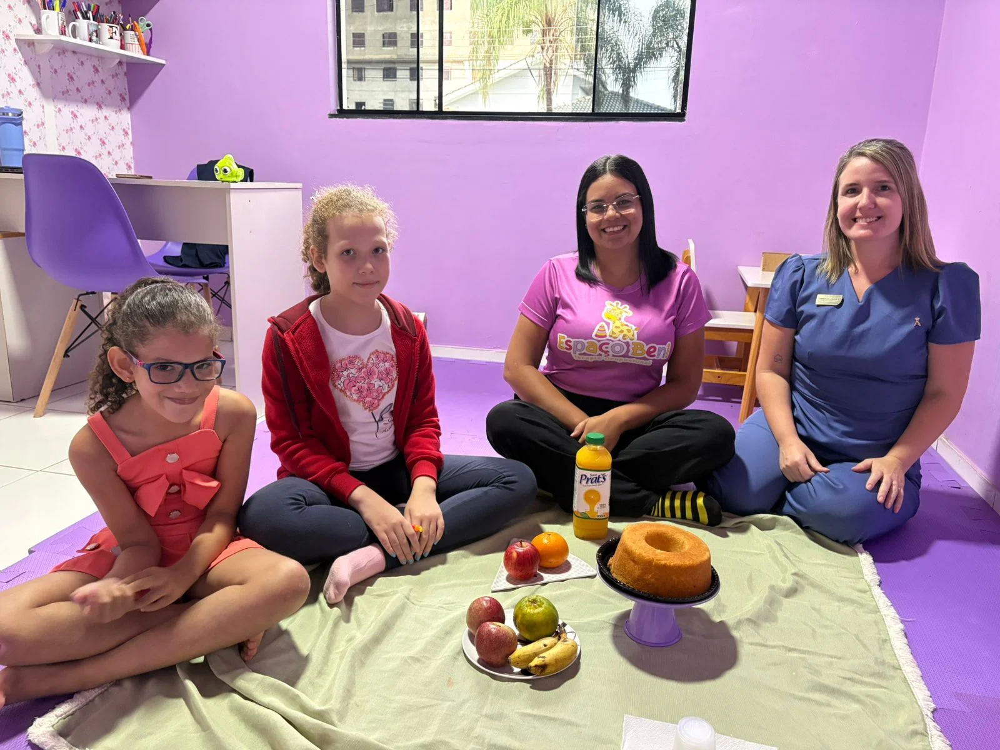
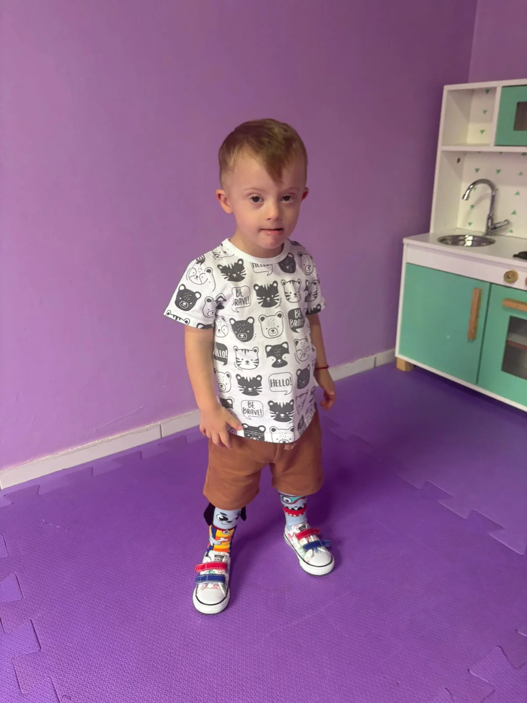
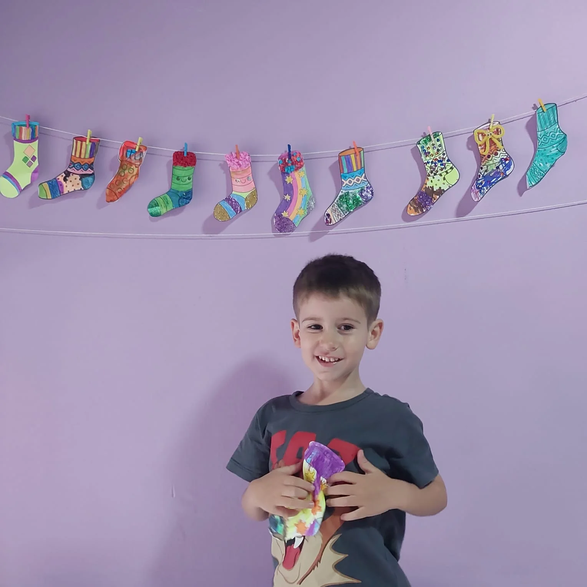
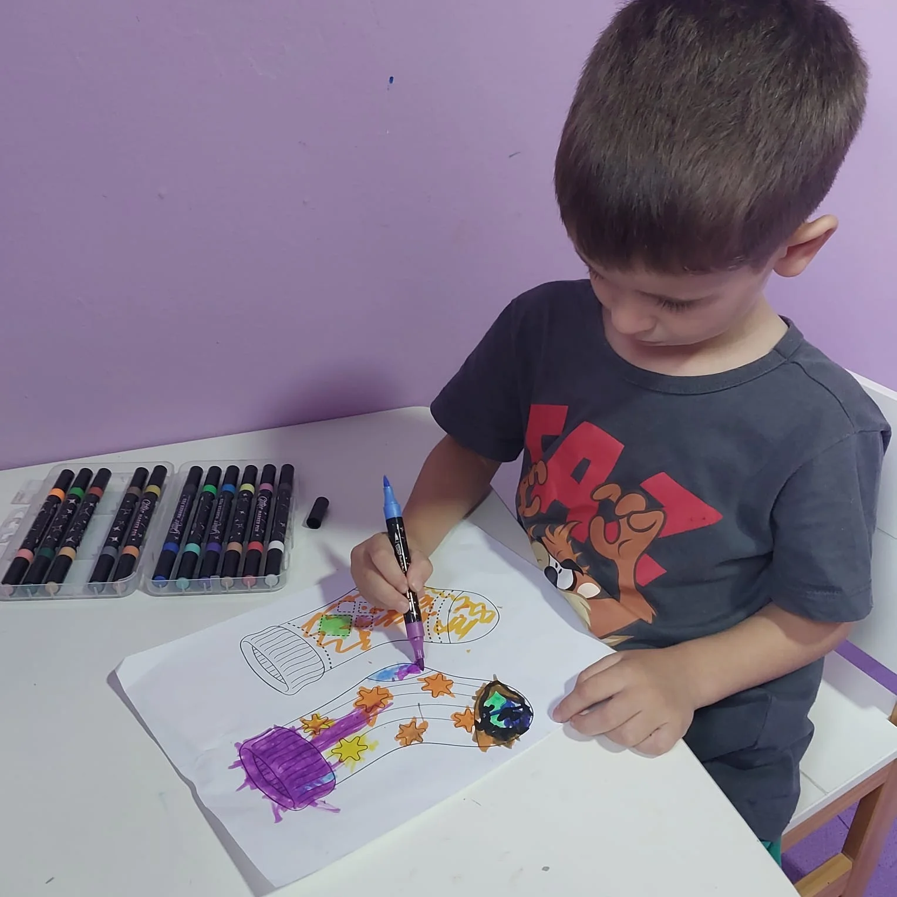

Eventos Especiais
Confira os momentos marcantes e as campanhas que o Espaço Beni realizou.
Dia Internacional da Síndrome de Down 💙💛
Celebrando a diversidade e o valor de cada indivíduo.


A Síndrome de Down não define uma criança!
Ela não limita sonhos, não reduz capacidades e, principalmente, não diminui o brilho de quem ela é 💛
Cada uma tem seu tempo, seu jeito e suas conquistas, e todas merecem oportunidades, respeito e inclusão. Valorizamos cada pequeno progresso e acreditamos que toda criança pode aprender, evoluir e participar.💙 Juntos, podemos construir uma sociedade mais inclusiva, com mais empatia e menos rótulos.
O papel do Espaço Beni
No Espaço Beni, a inclusão é a nossa essência. Trabalhamos diariamente com nossa equipe multidisciplinar para oferecer um ambiente de cuidado, onde cada paciente é valorizado e estimulado com respeito, humanidade e ciência.
O Espaço Beni celebra o Dia Internacional da Síndrome de Down com o uso de meias coloridas 🧦💛, um gesto simbólico que representa a diversidade e reforça que ser diferente é natural. Cada combinação expressa a singularidade de cada criança, destacando a importância da inclusão e do respeito.

